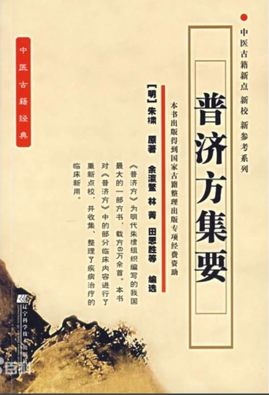
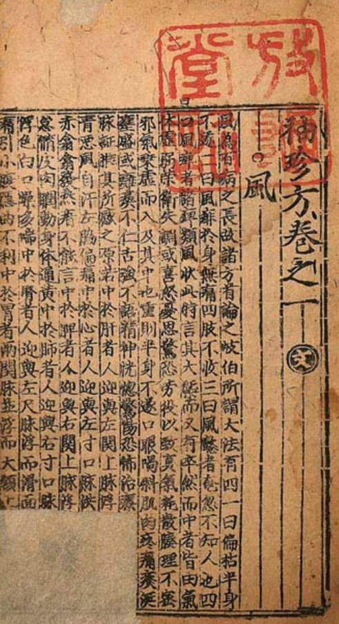
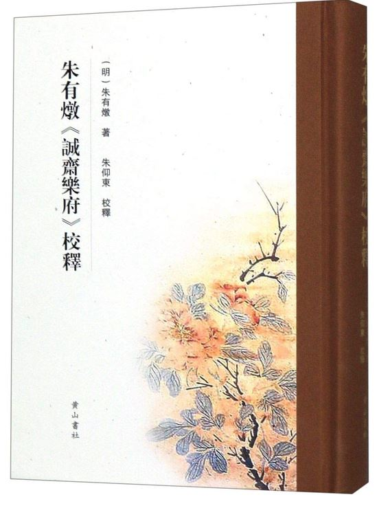
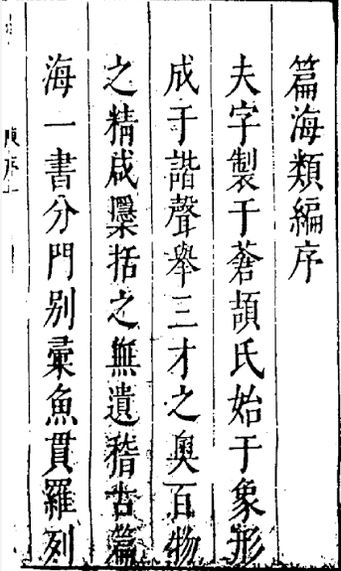

大明周藩传世典籍与学术著述全考
明代周藩以“仁孝好学、崇文尚医、精通艺律”冠绝诸藩。始祖周定王朱橚在开封王府辟“生药圃”、建“良医所”，躬行植物培育与医方考辨，开创救荒本草学与巨部方剂集成之先河；其世子周宪王朱有燉兼善词曲、风物考证；海宁王支宗室朱睦㮮筑“万卷堂”聚书考据，形成了明代宗室中体量最宏大、科学与人文兼备的“周藩文献宝库”。
🌿 始祖朱橚农医科学巨著
《救荒本草》（全二卷 · 四百一十四种）
世界食用植物学奠基作

📖 明周王府原刻《救荒本草》木刻植物图谱书影
朱橚因见中原连年饥馑，乃设生药圃于开封周王府，引种嵩山、太行山及中原原野之野生草木，亲验其萌芽花实，辨识可食部位与去毒加工之法。每种植物皆附实物写生木刻插图，首创以“救荒备饥”为目的之植物学分类与利用体系，被英国科技史学家李约瑟誉为中国植物学史上的划时代专著。
414 种
收录植物总数
276 种
周藩新录首载植物
414 幅
精准木刻写生图
5 大部
草 / 木 / 米谷 / 果 / 菜
📋 《救荒本草》分类与代表性植物考
| 部类 | 卷帙 | 收录数量 | 周藩首载 | 代表性食用植物与加工要点 |
|---|---|---|---|---|
| 草部 | 上、下卷 | 245 种 | 178 种 | 苦荬菜、马齿苋、灰菜、荠菜、漏芦（采嫩叶煠熟，水淘去苦味，油盐调食） |
| 木部 | 上、下卷 | 80 种 | 47 种 | 杜梨、榆树（榆钱、榆皮取粉）、枸杞、桑椹（采嫩芽焯熟或晒干磨面） |
| 米谷部 | 上卷 | 20 种 | 11 种 | 稗子、野秫、野粟、荞麦（采实磨面作饼饵或煮粥） |
| 果部 | 下卷 | 23 种 | 14 种 | 野葡萄、君迁子、山楂、酸枣、郁李仁（生食、渍蜜或风干充饥） |
| 菜部 | 下卷 | 46 种 | 26 种 | 蔓菁、水芹、苜蓿、野油菜（采苗叶洗净，盐渍或沸水焯食） |
“先王目击其艰，虑夫凶年饥岁，民不聊生，乃采野草之可食者，播种于圃，躬自品尝，绘图列说，命工梓行，以贻后世。” ——周宪王朱有燉《救荒本草 · 后序》
《普济方》（全一百六十八卷 / 四库本四百二十六卷 · 六万一千七百三十九方）
中医古籍收方之冠

📖 明代第一大方书《普济方》书影
周王府广罗海内医书秘籍，上溯《黄帝内经》《难经》《伤寒杂病论》，下逮金元四大家，历时十余年编纂而成。全书收录医方 61,739 首，插图 239 幅，涵盖脏腑、伤寒、杂病、妇人、小儿、外科、针灸诸科，完整保存了大量宋元以前已佚失的医方典籍，被誉为“中国古代第一大医学百科全书”。
📊 中国古代大型官私修方书规模对照
| 著作名称 | 主编时代与编者 | 收录医方数 | 卷帙规模 | 历史地位与文献价值 |
|---|---|---|---|---|
| 《太平圣惠方》 | 北宋 (992) · 王怀隐等 | 16,834 首 | 100 卷 | 宋初官修医学巨著 |
| 《圣济总录》 | 北宋 (1117) · 宋徽宗敕修 | 近 20,000 首 | 200 卷 | 北宋后期官修医学全书 |
| 周藩《普济方》 | 明初 (1398) · 周王朱橚 | 61,739 首 | 426 卷 | 中国古代体量最大之方剂渊海，存世古方集大成者 |
“自轩岐以下迄于元明，巨细毕备，古今医方之渊海也。虽其间多杂采各家之说，未能尽加考订，然诸书多已散佚，得此而藉以考见源流，亦博考者之所必资矣。” ——《四库全书总目提要》
《袖珍方》（全四卷 · 三千余方）
战地民生急救指南

📖 便携临证急救手册《袖珍方》
系定王从《普济方》浩繁方海中提炼而出的便携式临证急救手册。专门选取药材易得、炮制简便、见效迅捷之良方，供随军行伍、偏远乡村及无医之地应急治病之用。此书简明实用，明清两代屡经翻刻，流传甚广。
- 辨证精简：分列伤寒、中风、痈疽、金疮、妇儿急症等常见病门；
- 用药平易：多选用中原寻常易得草药与家常调料（生姜、葱白、盐、醋等）；
- 便于携带：采用袖珍小字本印行，利于医士随军随身翻阅。
《保生余录》（全三卷）
道家养生与食疗名著
定王总结先秦至宋元道家养生理论与民间寿世验方汇编而成。书中详述四时调摄、起居禁忌、食疗药膳、老人保元与导引吐纳之术，倡导“治未病”与顺应自然的摄生思想，为明代宗室养生学的代表之作。
🎭 宪王朱有燉戏曲与文学名著
《诚斋乐府》（杂剧三十一种 · 散曲八卷）
大明戏曲鼎峰

📖 明宪王《诚斋乐府》原刻剧本
朱有燉为明代杂剧名家，存世杂剧数量居明代诸曲家之首。宪王精通音律，作品兼具北曲之豪劲与南曲之婉丽，开创了王府演剧与市民市井曲艺交融的新范式，在日本及海外汉学界亦享有极高评价。
🎭 代表性杂剧分类名录
- 水浒英雄剧：《黑旋风仗义疏财》《黑旋风乔断案》——传承元杂剧水浒余韵，生动刻画李逵等市井豪侠；
- 三国历史剧：《义勇辞金》《关云长千里独行》——赞颂忠义风骨，对明代演义小说戏曲化影响深远；
- 神仙道化剧：《牡丹仙》《八仙庆寿》《刘晨阮肇误入桃源》——王府节庆承应之作，辞藻富丽，音律精工；
- 世情婚恋剧：《香囊记》《赵元遇上皇》——描摹宋元市井生活与男女情爱，极具烟火气息。
《元宫词》（全一百首）
元大都风物诗史
📖 记述元大都宫廷风物之《元宫词》
宪王以百首七言绝句，详尽描摹元大都大内宫殿格局、岁时庆典、宫廷饮食（如马奶酒、诈马宴）、服饰仪仗及北方风俗。此组诗既具极高的文学艺术价值，亦是研究蒙元宫廷制度与北方民俗的珍贵第一手诗史资料。
“诈马筵开玉殿春，千官同拜紫微宸。银盆盛肉葡萄酒，敕赐金牌第一人。” ——朱有燉《元宫词 · 节选》
📚 宗室学者朱睦㮮目录与金石学巨作
《篇海类编》（全二十卷）与《金石碑帖考》
明代字书与金石巅峰

📖 周藩万卷堂刻本大型字书《篇海类编》
朱睦㮮博通经史，筑“万卷堂”聚书数万卷。所著《篇海类编》广搜古今奇字、俗字与正字，考辨形音义，为明代体量宏大之字典巨著；所撰《金石碑帖考》系统考订中原先秦至唐宋石刻碑版源流，奠定明代藩邸学者在金石文献考据学上的崇高地位。
📖 周王府重刻与校勘珍本善本
《幼幼新书》（全四十卷）
周藩校勘古籍
重刊宋代庄绰儿科经典。开封周王府以宋代善本为底本，广校诸家传本，纠正讹误，使这部收罗千首儿科古方、图谱的医学巨典得以完整流传后世，对明代儿科学的发展起到了承前启后的关键作用。
《本草发挥》（全四卷）
金元医理名著
元代徐彦纯辑录张元素、李杲、朱震亨等金元诸家本草药性理论。周藩精刻本字画精整、校勘精准，成为明代中原医家研习脏腑辨证与药物归经理论的案头必读书目。
⏳ 周王府修书与刊刻文献大事简表
| 年代 | 主持者 | 典籍 / 事件 | 文献贡献与地位 |
|---|---|---|---|
| 洪武三十年 (1397) | 周定王 朱橚 | 刊刻《袖珍方》四卷 | 提炼急救便携医方三千余首，布施中原军民。 |
| 洪武三十一年 (1398) | 周定王 朱橚 | 《普济方》编纂成帙 | 收方 61,739 首，成中国古代收方最多的方剂全书。 |
| 永乐四年 (1406) | 周定王 / 周宪王 | 《救荒本草》二卷刊行 | 图文精刻 414 种植物，开创中国写生植物学之先河。 |
| 正统至景泰年间 | 周宪王 朱有燉 | 《诚斋乐府》杂剧散曲刊刻 | 刊行杂剧 31 种、散曲数百套，奠定大明戏曲鼎峰地位。 |
| 嘉靖至万历年间 | 宗室 朱睦㮮 | 编著《篇海类编》《金石碑帖考》 | 收录字书音义、考辨天下碑版，名动中原学界。 |